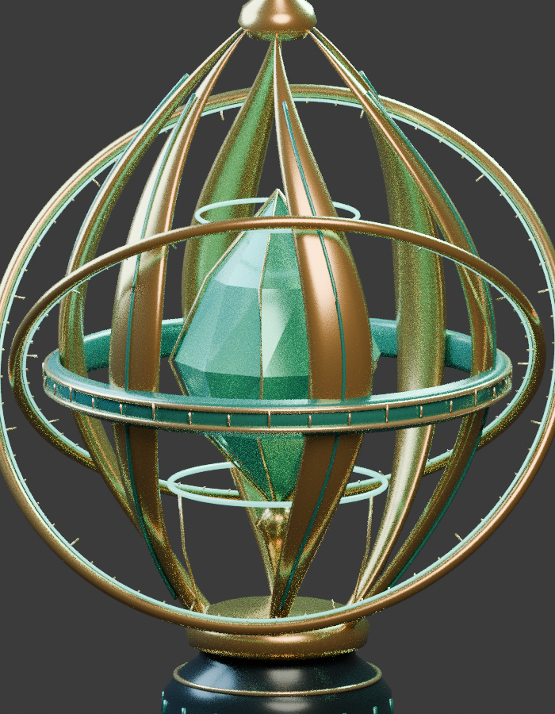

AN ORIGINAL 3D STUDY
悬浮圣器
工坊Celestial
Reliquary.
以曲面构筑骨架，
以光承托悬浮的星核。
BLENDER → GLB → THREE.JS
真实网格 · 实时渲染 · 自由观察

正在唤醒星核Blender 实际渲染预览 · 正在准备交互
OBJECT 001
↔ 拖动旋转⊕ 滚轮 / 双指缩放
READING THE OBJECT / 观看线索
先看留白，再看结构。
一件关于悬浮的练习，也是一件需要接受检查的实体网格。

悬浮感，仍被前景打断。
宽肋和环带占据核心的正面视线。修复拓扑并不等于完成造型；下一步要减少遮挡，让晶核的轮廓完整显现。
当前修复版 · Blender 实际近景渲染。图中采样噪点不代表实时闪烁。
- 01 / 轮廓
弧形骨架托起星核
从金色弧线之间寻找晶核的留白。正面仍有宽肋遮挡，这是下一轮需改善的主次关系。
- 02 / 证据
装配接触 ≠ 穿模清零
退化面、重复面与已检测共面重叠已修复；预期嵌入接触单独记录，不把检测结果包装成完全无穿插。
阅读检查记录 ↗ - 03 / 边界
看见什么，就说明什么
浏览器支持 WebGL 时可旋转、切换白模与线框；否则呈现真实 Blender 渲染。实时闪烁与真机触控仍待验收。
OPEN STUDIO / 制作档案
不只看见，也能拆解。
模型、源码与复盘始终可达。
静态预览不替代实时交互验收。